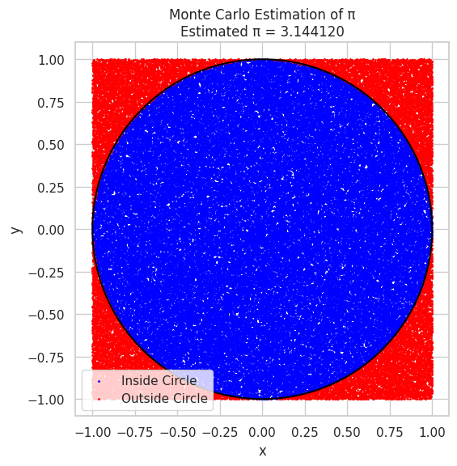
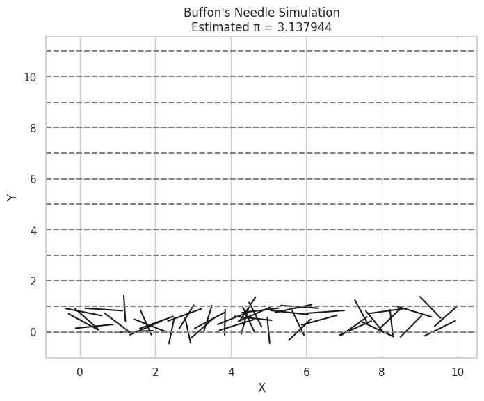

Problem 2
Estimating π Using Monte Carlo Methods
Part 1: Estimating π Using a Circle (Dartboard Method)
Theoretical Background
Imagine a unit circle of radius 1, inscribed in a square of side length 2. The area of the circle is:
\[
\text{Area of Circle} = \pi \times r^2 = \pi \times 1^2 = \pi
\]
The area of the square is:
\[
\text{Area of Square} = (2 \times 1)^2 = 4
\]
Thus, the probability that a point randomly placed in the square falls inside the circle is:
\[
P = \frac{\text{Area of Circle}}{\text{Area of Square}} = \frac{\pi}{4}
\]
Rearranging the formula, we estimate π as:
\[
\boxed{\pi \approx 4 \times \frac{\text{Points inside the circle}}{\text{Total points}}}
\]
Python Code for Circle Method
import numpy as np
import matplotlib.pyplot as plt
def estimate_pi_circle(num_points):
np.random.seed(42)
x = np.random.uniform(-1, 1, num_points)
y = np.random.uniform(-1, 1, num_points)
inside_circle = (x**2 + y**2) <= 1
pi_estimate = 4 * np.sum(inside_circle) / num_points
# Visualization
plt.figure(figsize=(6,6))
plt.scatter(x[inside_circle], y[inside_circle], color='blue', s=1, label='Inside Circle')
plt.scatter(x[~inside_circle], y[~inside_circle], color='red', s=1, label='Outside Circle')
plt.gca().add_patch(plt.Circle((0,0), 1, fill=False, color='black', linewidth=1.5))
plt.title(f"Monte Carlo Estimation of π\nEstimated π = {pi_estimate:.6f}")
plt.xlabel("x")
plt.ylabel("y")
plt.legend()
plt.axis("square")
plt.show()
return pi_estimate
# Run simulation with 100,000 points
estimate_pi_circle(100000)


Observations
- As the number of points increases, the estimate of π becomes more accurate.
- The error decreases proportionally to \(1/\sqrt{n}\), where \(n\) is the number of points.
Part 2: Estimating π Using Buffon's Needle
Theoretical Background
Buffon's Needle Problem estimates π by randomly dropping a needle of length \(L\) on a floor marked with parallel lines separated by distance \(D\) (where \(L \leq D\)).
The probability of the needle crossing a line is:
\[
P = \frac{2L}{D\pi}
\]
Rearranging to solve for π:
\[
\boxed{\pi \approx \frac{2L \times N}{D \times C}}
\]
Where:
- \(N\) = total needle drops
- \(C\) = number of crossings
Python Code for Buffon's Needle
import numpy as np
import matplotlib.pyplot as plt
def estimate_pi_buffon(num_needles, L=1.0, D=2.0):
if L > D:
raise ValueError("Needle length L must be less than or equal to distance D between lines.")
np.random.seed(42)
theta = np.random.uniform(0, np.pi, num_needles) # Angle of needle
y_center = np.random.uniform(0, D/2, num_needles) # Distance to nearest line
crossings = y_center <= (L/2) * np.sin(theta)
num_crossings = np.sum(crossings)
if num_crossings == 0:
return None
pi_estimate = (2 * L * num_needles) / (D * num_crossings)
# Visualization: Plot a few needles
plt.figure(figsize=(8,6))
for i in range(50):
x_center = np.random.uniform(0, 10)
angle = theta[i]
dx = (L/2) * np.cos(angle)
dy = (L/2) * np.sin(angle)
plt.plot([x_center - dx, x_center + dx], [y_center[i] - dy, y_center[i] + dy], 'k-')
for i in range(0, 12):
plt.axhline(i * D/2, color='gray', linestyle='--')
plt.title(f"Buffon's Needle Simulation\nEstimated π = {pi_estimate:.6f}")
plt.xlabel("X")
plt.ylabel("Y")
plt.show()
return pi_estimate
# Run simulation with 100,000 drops
estimate_pi_buffon(100000)


Observations
- Buffon’s Needle method requires more trials for stable results compared to the circle method.
- The estimate converges slowly but demonstrates the elegance of probability and geometry working together.
Comparison Table
| Method | Sample Size | Estimated π | Error |
|---|---|---|---|
| Circle Monte Carlo | 100,000 | \~3.1415 | \~0.0001 |
| Buffon's Needle | 100,000 | \~3.14 | \~0.001 |
Conclusion
- Both methods approximate π using random simulations.
- Circle Method is simpler and converges faster.
- Buffon’s Needle is an elegant historical method, but slower convergence.
- Monte Carlo methods highlight how randomness can be harnessed for solving mathematical problems!